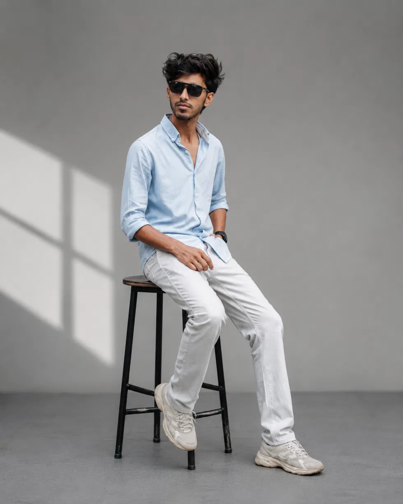

GOOD STORIES.
GREAT CUTS.
THE PERSON BEHIND THE TIMELINE
Hey, I’m Nihal.
I turn raw footage into visual stories with rhythm, emotion, and a reason to keep watching.
EXPLORE MY WORK ↘A little motion.
A lot of intention.
MUHAMMED
NIHAL T ↗
NIHAL T ↗

THE EDITOR / IN FRAME
01 / THE SHOWCASE
WORK IN MOTION.
Where footage finds its story. Selected edits and motion work.
Watch on YouTube ↗
Featured video edit
VIDEO EDITING02 / BEHIND THE EDIT
EVERY FRAME.
A PURPOSE.
I'm Muhammed Nihal T, a passionate video editor and motion designer focused on turning raw footage into engaging visual stories. I work across video editing, motion graphics, short-form content, transitions, color, sound and visual effects to create content that feels modern, energetic and purposeful.
MY GOAL IS SIMPLE — MAKE EVERY FRAME COUNT.
03 / THE CREATIVE TOOLKIT
MY TOOLKIT
PREMIERE PRO
Professional editing, pacing, storytelling, timeline management and platform-ready content.
AFTER EFFECTS
Motion graphics, kinetic typography, visual effects, animation, compositing and transitions.
CAPCUT
Fast-paced reels, shorts, social-first editing and modern short-form content workflows.
VISUAL CRAFT
Color correction, sound design, audio synchronization, visual rhythm and content storytelling.
04 / WHAT I DO
SERVICES
VIDEO EDITING
Professional editing for YouTube, promotional content, social media and creative projects.
SHORT-FORM CONTENT
Reels and Shorts built around strong hooks, pacing, retention and platform-native storytelling.
MOTION GRAPHICS
Animated titles, kinetic typography, transitions, visual effects and motion systems.
SOCIAL MEDIA VIDEO
Modern visual content tailored for Instagram, YouTube and other social platforms.
COLOR & SOUND
Color correction, cinematic grading, music synchronization, sound effects and audio enhancement.
PROMOTIONAL VIDEO
Creative videos designed to communicate products, services and brand messages clearly.
05 / PROCESS
MY PROCESS
01
UNDERSTAND
Audience, platform, objective and visual direction.
02
EDIT
Strong footage selection, pacing and story structure.
03
ENHANCE
Motion, color, sound design, transitions and visual effects.
04
DELIVER
Final polish, platform optimization and clean delivery.
06 / CONTACT
LET’S MAKE
THE NEXT CUT.
Have a project, brand or idea that needs better visuals? Let's turn it into something worth watching.
CONTACT ME ↗